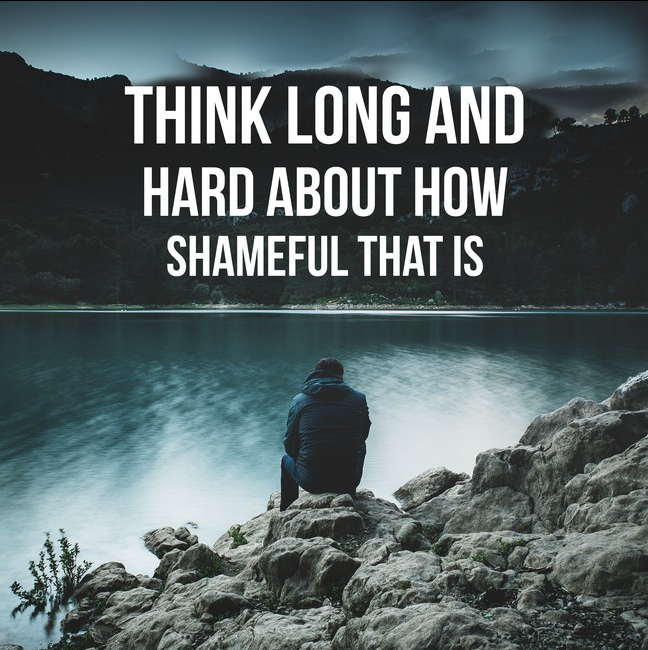

Pedro Wosch
Estudante do TADS, Gamer e Futuro Dev
Devemos manter nossas ambições. Vale a pena lutar pelo nosso futuro. 
o humor do futuro realmente é gerado automáticamente. Obrigado,
Inspirobot
, pela imagem inspiradora